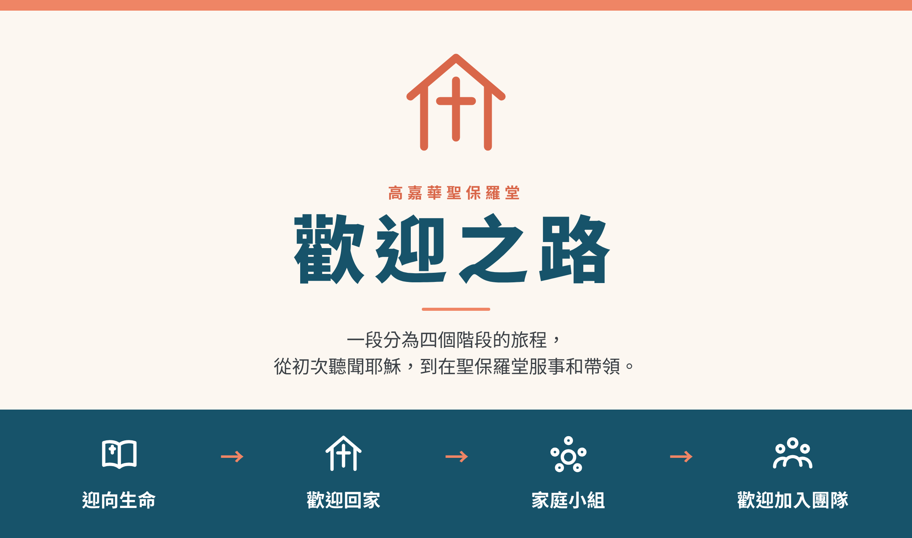
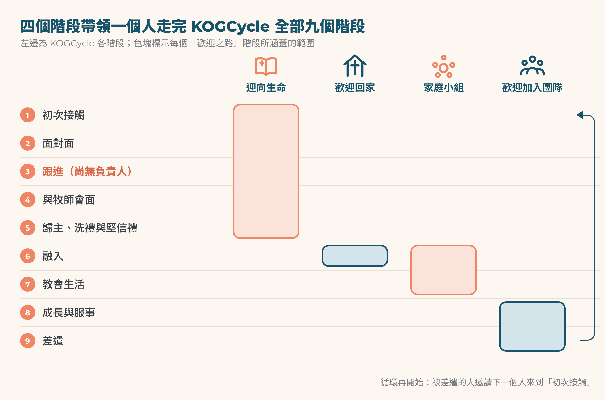

2026年10月5日

「歡迎之路」是一段分為四個階段的旅程：迎向生命 → 歡迎回家 → 家庭小組 → 歡迎加入團隊。這條路帶領一個人從初次聽聞耶穌，走到在聖保羅堂服事和帶領。
成長團隊於2026年7月14日議定這些名稱，並得到各組長認同。這些名稱取代了以往重疊的課程名稱：Discovery 課程、夥伴課程（Partnership Course）和成長小組。正如我們向教會所說的：「我們不是在改變小組，而是為它們一直以來的本相命名：家。」
這條路就是會眾在 KOGCycle 上前進的方式。KOGCycle 是我們從「初次接觸」到「差遣」的九階段門徒訓練路線圖。這條路的每一個階段都對應 KOGCycle 的一個或多個階段，所以兩者總是一起閱讀。
它服務於我們的年度目標：2026年12月31日前，有75個家庭在教會服事；也服務於我們的 Horizons 異象：到2035年，有500個家庭分布在10個會眾之中。
「全身都靠祂聯絡得合式，百節各按各職，照著各體的功用彼此相助，便叫身體漸漸增長，在愛中建立自己。」以弗所書 4:16（和合本）

「歡迎回家」與「家庭小組」在「融入」（第6階段）重疊：一個人仍在參加「歡迎回家」課程時，就會被安排加入一個家庭小組。「跟進」（第3階段）是 KOGCycle 中唯一仍無人負責的階段。
「迎向生命」帶領慕道者認識耶穌。它涵蓋我們的傳福音事工，從第一次交談，直到歸主、洗禮與堅信禮。
KOGCycle 階段： 1 初次接觸 · 2 面對面 · 3 跟進 · 4 與牧師會面 · 5 歸主、洗禮與堅信禮
對象： 新朋友、朋友、家人，以及任何正在探索基督信仰的人。
包括：
「探索」課程。 這是「迎向生命」的主要課程，探索基督信仰。下一期在2026年10月18日（主日）開始。
帶來初次接觸的外展佈道活動：父親節、中秋節、聖誕音樂會。
Easy English 英語班，以及主日的招待組（面對面）。
牧師探訪（與牧師會面）。
一個人如何走過這個階段：
他們受邀參加活動或主日崇拜（初次接觸）。
招待組在門口迎接他們，並記住他們的名字（面對面）。
他們第一次來之後兩天內，有人聯絡他們（跟進）。
牧師與他們會面（與牧師會面）。
他們受邀參加「探索」課程。
信靠耶穌的人預備接受洗禮或堅信禮（歸主、洗禮與堅信禮）。
下一步： 歡迎回家。
「歡迎回家」歡迎人加入聖保羅堂這個家。它的課程 「歡迎回家」，是邀請人不再作客人：「這樣，你們不再作外人和客旅，是與聖徒同國，是神家裡的人了」（以弗所書 2:19）。
KOGCycle 階段： 6 融入
對象： 從「迎向生命」出來的初信者、剛來到聖保羅堂的基督徒，以及尚未參加過這課程的恆常聚會者。
課程共三個晚上， 分兩個時段：星期五或主日，晚上6:00至8:00。每晚有晚餐、一篇信息和桌邊分享；同一位桌長三個晚上都陪伴同一桌的客人。
| 晚上 | 問題 | 經文或重點 |
|---|---|---|
| 1 | 這位神是誰？祂作了甚麼？ | 以弗所書 2:1–10 |
| 2 | 這是怎樣的一個家？ | 以弗所書 2:11–22 |
| 3 | 你在這個家的位置在哪裡？ | G7團隊、家庭小組、會友身份、洗禮與堅信禮 |
下一期課程：星期五11月20日、27日及12月4日，或主日11月22日、29日及12月6日。課程以英語進行，設普通話翻譯，並有兒童看顧。現已開放報名：「歡迎回家」報名頁。
一個人如何走過這個階段：
牧師、桌長或團隊組長親自邀請他們。
他們選定一個時段，參加全部三個晚上。
在第三晚，他們寫下一個G7團隊和一個家庭小組。
七天內，他們所寫的團隊組長會聯絡他們；年底前，他們會被安排加入一個家庭小組。
下一步： 家庭小組。
家庭小組是我們每週在神家中一同生活的地方：一起讀經、禱告、彼此關顧。這名稱取代了「成長小組」；小組本身沒有改變。
KOGCycle 階段： 6 融入 · 7 教會生活
對象： 聖保羅堂每一位會友，從 KOGMini 到平日團契。
健康的家庭小組：
盡可能定期實體聚會。
刻意避免變得排外。
是一個可以安心分享在基督裡的掙扎與得勝的地方。
以身作則地作門徒訓練：「你們該效法我，像我效法基督一樣。」
組長培養下一位組長（提摩太後書 2:2），先一同帶領，然後分組。
一個人如何走過這個階段：
他們加入一個在語言、人生階段和時間上都合適的小組。
組長不單在小組裡，也親自與他們保持聯繫。
當他們在信心和品格上成長，組長鼓勵他們服事。
關顧尚未加入小組的人： 有些恆常聚會的弟兄姊妹正處於特殊的人生處境，我們在牧養上關顧他們，不施壓要他們加入小組。其他人則會被逐一親自邀請，加入合適的小組。
下一步： 歡迎加入團隊。
「歡迎加入團隊」差派人進入服事和帶領。它幫助每位會友發現神所賜的恩賜，並在其中一個G7團隊找到自己的位置。它取代了以往帶恩賜意義的 Discovery 課程。
KOGCycle 階段： 8 成長與服事 · 9 差遣
對象： 已在家庭小組中穩定、預備好服事的會友，以及正被培養成為組長的服事者。
包括：
「歡迎加入團隊」課程，以英語和中文進行。
恩賜盤點（「神賜給高嘉華聖保羅堂的恩賜」）。
加入一個G7團隊：差派（Go）、榮耀（Glorify）、成長（Grow）、關懷（Gregarious）、恩賜（Giftedness）、後勤（Glue）或治理（Governance）。
按提摩太後書 2:2 原則進行的組長培訓。
一個人如何走過這個階段：
他們完成課程和恩賜面談。
他們加入一個G7團隊並開始服事。
有帶領恩賜的人接受培訓去帶領，並培養其他人。
有些人被差派到新的事工、會眾或宣教工場（差遣）。
循環再開始： 服事的人邀請下一個人，這條路又從「初次接觸」重新開始。
人往往不是在課程中流失，而是在交接時流失。所以每一個交接點都有一個指定的崗位負責。「跟進」的兩天時限已經議定；其他時限只是建議，有待成長團隊確認。
| 交接 | KOGCycle | 負責人 | 時間 |
|---|---|---|---|
| 第一次來 → 個人聯絡 | 2 → 3 | 尚未安排（需要負責人） | 第一次來之後兩天內 |
| 聯絡 → 與牧師會面 | 3 → 4 | 主任牧師及助理牧師 | 兩週內 |
| 與牧師會面 → 「探索」課程 | 4 → 5 | 牧師 | 下一期課程 |
| 「探索」課程 → 歡迎回家 | 5 → 6 | 「探索」課程負責人 | 課程最後一堂 |
| 歡迎回家 → 家庭小組 | 6 | 「歡迎回家」課程負責人 | 課程結束前 |
| 家庭小組 → 歡迎加入團隊 | 7 → 8 | 家庭小組組長 | 當事人預備好服事時 |
| 歡迎加入團隊 → G7團隊 | 8 | 恩賜團隊組長 | 課程結束時 |
缺口：跟進（KOGCycle 第3階段）。 我們擅長認識新朋友，也擅長留住人；但新朋友第一次來之後的那兩天，目前無人負責。這是最急需填補的崗位。
團隊分工： 成長團隊負責「迎向生命」、「歡迎回家」和家庭小組；恩賜團隊負責「歡迎加入團隊」。
我們第四季的四個里程碑中，有兩個屬於這條路。兩者都是為了年度目標：12月31日前，有75個家庭在教會服事。
| 階段 | KOGCycle | 第四季里程碑 | 目標 |
|---|---|---|---|
| 迎向生命 | 1, 5 | 「探索」課程，10月18日（主日）開始 | 5人參加 |
| 迎向生命 | 1 | 聖誕音樂會，12月13日（主日） | 超過120人出席 |
| 迎向生命 | 5 | 堅信禮崇拜，12月13日上午 | 預備好的人接受堅信禮 |
| 歡迎回家 | 6 | 至少開辦一期「歡迎回家」課程 | 4個家庭參加 |
| 家庭小組 | 6 | 親自邀請尚未加入小組的恆常聚會者 | 每人都安排到合適的小組 |
| 歡迎加入團隊 | 8 | 招募 KOGKids 及青少年助理 | 6位（目前3位） |
過往參與數據（取自成長小組概覽）：歡迎回家 17/23（目標70%）；Discovery 課程 8/23（目標50%）；家庭小組參與 73/80，包括兒童（91%）。
請在所有崇拜程序表、月刊、投影片、指示牌和電郵中使用以下名稱。
| 英文名稱 | 中文名稱 | 不再使用 |
|---|---|---|
| Welcome to Life | 迎向生命（待確認） | Christianity Explored、Life Course（作為路徑名稱） |
| Discover Course（屬於 Welcome to Life） | 「探索」課程 | Discovery Course |
| Welcome Home | 歡迎回家（待確認） | Welcome to the Family（歡迎加入神的家）、夥伴課程 |
| Home Groups | 家庭小組 | Growth Groups（成長小組） |
| Welcome to the Team | 歡迎加入團隊（待確認） | Discovery Course（恩賜） |
仍待更新：
KOGCycle 海報：第6階段仍寫著「growth group + 121」
十一月月刊：把里程碑中的「Welcome to the Family」改正
崇拜投影片範本及指示牌
確認「迎向生命」、「歡迎回家」和「歡迎加入團隊」的中文名稱